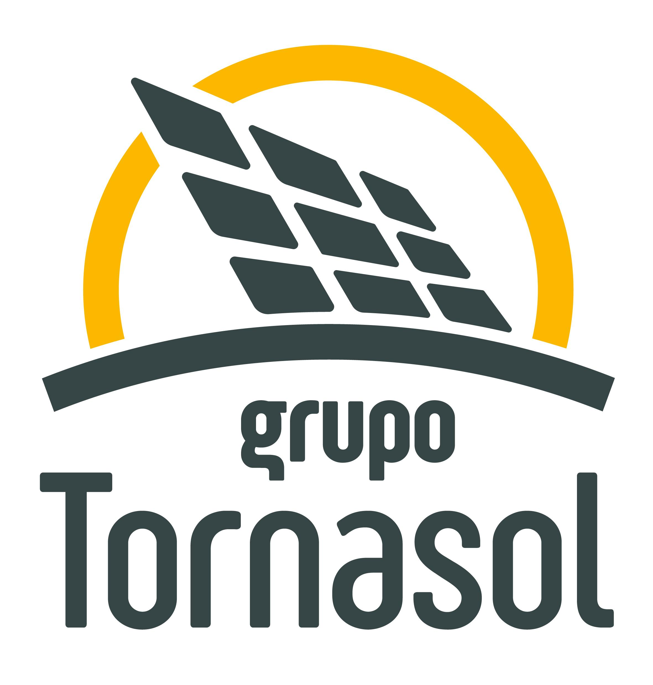

Aplicación Multiplataforma (AppNova S.L.)

Sistema de Auditoría para Huertos Solares
Desarrollo completo de una aplicación de campo para el mantenimiento de seguidores solares. Arquitectura híbrida que permite a los técnicos trabajar en zonas sin cobertura guardando los datos en local, para después sincronizarlos automáticamente con la nube mediante Supabase al recuperar la conexión. Incluye panel de control web en tiempo real para supervisores, sistema de filtros dinámicos, búsquedas universales y trazabilidad del personal.
- React Native
- Supabase (PostgreSQL)
- SQLite
- TypeScript